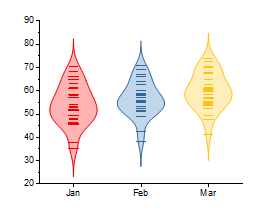
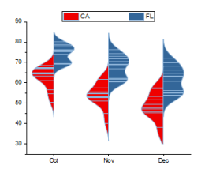
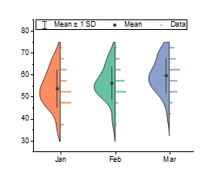
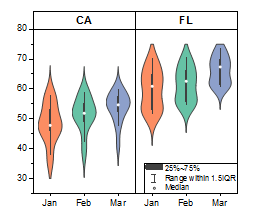

Originでは7種類のバイオリンプロットに対応しています。メニューから直接バイオリンプロットを作図できます。
バイオリンプロットの作成
データの各Y列はバイオリンプロットとして表示されます。列の名前やラベルは、X軸ラベルとして使われます。
バイオリンプロットの表示を編集するには：
または、
どちらの方法でも作図の詳細ダイアログボックスが開き、ダイアログボックスの左側にボックスチャートのデータプロットアイコンが選択された状態になります。ボックスチャートの編集オプションは、ダイアログボックスの右側の領域のタブで利用できます。
ボックスチャートの編集に関しての詳細は、以下のトピックをご覧下さい。
以下に、様々なボックスチャートのサンプルを示します。ヘルプ: ラーニングセンター: グラフサンプルを使って、バイオリンプロット - 水平分割バイオリンのサンプルを作成できます。この表は、US Mean Temperatureワークシートのデータセット（列）を参照し、グラフの作図の詳細ダイアログボックスで行われた編集の一覧です。
|  | 列(D)から列(F)までを通して作図 メニューから作図> 2D: バイオリン: 棒付きバイオリンを選択します。 |
分布タブ:
|
|  | 列(M)から列(P)までを通して作図
|
ボックスチャートタブ
|
|  | 列(D)から列(F)までを通して作図
|
ボックスチャートタブ
|
|  | 列(D)から列(F)までを通して作図 メニューから作図> 2D: バイオリンプロット: 棒付きバイオリンを選択します。 |
区分タブに移動します。
|